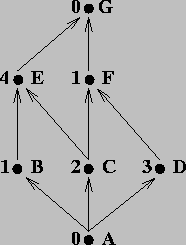

Programmierparadigmen
Aufgaben
1 Teil 1 (5. Semester)
1.1 Aufgabe (SEND-MORE-MONEY)
Lösen Sie das SEND-MORE-MONEY-Problem aus der Vorlesung (Aufgabe: Mehr Geld bitte!) in einer Programmiersprache Ihrer Wahl! Beachten Sie Nebenbedingungen.
1.2 Aufgabe (Beweis Pkw-Motorräder-Problem)
Führen Sie für das Pkw-Motorräder-Problem aus der Vorlesung den dort verlangten Beweis!
1.3 Aufgabe (Einstieg in SML)
Schreiben Sie eine Funktion
sum_pair_list(Signatur:(int * int) list -> int), die eine Liste von Paaren, bestehend aus zwei Ganzzahlen, summiert. Z. B. liefert der Aufrufsum_pair_list [(2,3), (4,5)]
den Wert 14.
Schreiben Sie eine Funktion
firsts(Signatur:(int * int) list -> int list), die aus einer Liste von Paaren, bestehend aus zwei Ganzzahlen, eine Liste mit den jeweils ersten Elementen der Paare extrahiert. Z. B. liefert der Aufrufsum_pair_list [(2,3), (4,5)]
den Wert
[2,4]- Schreiben Sie eine Funktion
seconds, die analog zufirstsdie jeweils zweiten Elemente einer Liste von Paaren liefert. - Schreiben Sie die Funktion
sum_pair_listneu unter Verwendung der Funktionenfirstsundseconds. Hausarbeit: Schreiben Sie eine Reihe von Funktionen, die Kalenderdaten (in vereinfachter Form) verarbeiten. Jedes Datum ist ein SML-Wert vom Typ
int*int*int, also ein Tripel bestehend aus je einer ganzen Zahl ür den Tag, den Monat und das Jahr, in dieser Reihenfolge. Ein korrektes Datum enthält ein positives Jahr, einen Monat zwischen 1 und 12 und einen Tag nicht größer als 31 (oder weniger, abhängig vom Monat).Achtung:
Die im Folgenden zu entwerfenden Funktionen müssen nur für korrekte Kalenderdaten das richtige Resultat liefern, d.h. sie müssen die Korrektheit eines Datums nicht prüfen.
- Schreiben Sie eine Funktion
ist_frueher, die zwei Kalenderdaten akzeptiert und einen booleschen Wert liefert, Sie lieferttrue, wenn das erste Datum zeitlich vor dem zweiten liegt. Wenn beide Kalenderdaten gleich sind, ist das Ergebnisfalse. - Schreiben Sie eine Funktion
kalenderdaten_in_monat, die eine Liste von Kalenderdaten und einen Monat (ganze Zahl) akzeptiert. Sie liefert eine Liste mit denjenigen Kalenderdaten aus der Argumentiste, die in dem gegebenen Monat liegen. Die Reihenfolge der Kalenderdaten in der Ergebnisliste ist unerheblich. Schreiben Sie eine Funktion
kalenderdaten_in_monaten, die eine Liste von Kalenderdaten und eine Liste von Monaten (Liste ganzer Zahlen) akzeptiert. Sie liefert eine Liste bestehend aus den Kalenderdaten aus der Argumentliste, die in irgendeinem Monat aus der Monatsliste liegen. Die Reihenfolge der Kalenderdaten in der Ergebnisliste ist unerheblich.Hinweise:
- Benutzen Sie die Lösung des vorangegangenen Aufgabenteils!
- Sie dürfen davon ausgehen, dass kein Monat in der Monatsliste mehrfach vorkommt.
- Schreiben Sie nun eine Funktion
kalenderdaten_in_monaten_2, die die gleiche Aufgabe wiekalenderdaten_in_monatenlöst, nun aber dafür sorgt, dass ein mehrfach in der Monatsliste vorkommender Monat keinen Einfluss auf das Resultat hat.
- Schreiben Sie eine Funktion
1.4 Aufgabe (Mustervergleich)
aus section2sum.pdf
datatype exp = Constant of int | Negate of exp | Add of exp * exp | Multiply of exp * exp
Thanks to the self-reference, what this data definition really describes is trees where the leaves are integers and the internal nodes are either negations with one child, additions with two children or multiplications with two children. We can write a function that takes an exp and evaluates it:
Lösung
fun eval e = case e of Constant i => i | Negate e2 => ~ (eval e2) | Add(e1,e2) => (eval e1) + (eval e2) | Multiply(e1,e2) => (eval e1) * (eval e2)
So this function call evaluates to 15:
eval (Add (Constant 19, Negate (Constant 4)))
Weitere Teilaufgaben:
There are many functions we might write over values of type exp and most of them will use pattern-matching and recursion in a similar way. Here are other functions you could write that process an exp argument:
- The largest constant in an expression
- A list of all the constants in an expression (use list append)
- A bool indicating whether there is at least one multiplication in the expression + The number of addition expressions in an expression
Here is the last one:
fun number_of_adds e =
case e of
=>0
=> number_of_adds e2
=> 1 + number_of_adds e1 + number_of_adds e2
Constant i
| Negate e2
| Add(e1,e2)
| Multiply(e1,e2) => number_of_adds e1 + number_of_adds e2
1.5 Aufgabe (Destructuring in Clojure)
…
1.6 Aufgabe (FHO in SML)
Because ML programs tend to use lists a lot, you might forget that higher-order functions are useful for more than lists. Some of our first examples just used integers. But higher-order functions also are great for our own data structures. Here we use an iseven function to see if all the constants in an arithmetic expression are even. We could easily reuse trueofallconstants for any other property we wanted to check.
datatype exp = Constant of int | Negate of exp | Add of exp * exp | Multiply of exp * exp fun is_even v = (v mod 2 = 0) fun true_of_all_constants(f,e) = case e of Constant i | Negate e1 | Add(e1,e2) | Multiply(e1,e2) => true_of_all_constants(f,e1) andalso true_of_all_constants(f,e2) => f i => true_of_all_constants(f,e1) => true_of_all_constants(f,e1) andalso true_of_all_constants(f,e2) fun all_even e = true_of_all_constants(is_even,e)
1.7 Aufgaben zu Currying und partielle Anwendungen
1.8 Aufgabe (curry uncurry)
aus section3sum.pdf: Combining Functions to Curry and Uncurry Other Functions
Sometimes functions are curried but the arguments are not in the order you want for a partial application. Or sometimes a function is curried when you want it to use tuples or vice-versa. Fortunately our earlier idiom of combining functions can take functions using one approach and produce functions using another:
fun other_curry1 f = fn x => fn y => f y x fun other_curry2 f x y = f y x fun curry f x y = f (x,y) fun uncurry f (x,y) = f x y
Analysieren Sie obige Funktionen.
Hinweis: Looking at the types of these functions can help you understand what they do. As an aside, the types are also fascinating because if you pronounce -> as “implies” and * as “and”, the types of all these functions are logical tautologies.
1.9 Aufgabe (alternative Listenimplementierung)
Gegeben sind folgende Definitionen für cns und fst:
(ns dataasproc) (use 'clojure.test) (def cns (fn [x y] (fn [m] (m x y)))) (def fst (fn [z] (z (fn [p q] p))))
- Verifizieren Sie, dass der Ausdruck
(fst (ons x y))als Resultatxliefert. - Fügen Sie die passende Definition von
rsthinzu.
2 Teil 2 (6. Semester)
2.1 Aufgabe (verzögerte Auswertung - Streams)
Streams
Ein Stream ist eine unendliche Folge von Werten. Selbstverständlich kann ein solche Folge nicht tatsächlich erzeugt werden - dies beanspruchte unendlich viel Zeit. Es ist aber möglich, Code zu erzeugen, der weiß, wie die Folge zu erzeugen ist und anderen Code, der weiß, wieviel Elemente benötigt werden.
Die UNIX pipe (cmd1 | cmd2) ist ein Stream; sie sorgt dafür, dass cmd1
genau so viel Output erzeugt wie cmd2 an Input verlangt.
Web-Programme, die auf Klicks von Benutzern auf Web-Seiten reagieren,
können die Benutzeraktivitäten als Stream betrachten – ohne zu wissen,
wann die nächste Aktivität kommt und wie viele es sein werden – und
entsprechend antworten.
Allgemeiner gesprochen: Streams stellen eine Art Arbeitsteilung dar: Ein Teil der Software weiß, wie aufeinanderfolgende Werte der unendlichen Folge zu erzeugen sind, weiß aber nicht, wie viele benötigt werden und was mit ihnen passieren soll. Ein anderer Teil kann ermitteln, wie viele Werte benötigt werden und was mit ihnen geschehen soll, weiß aber nicht, wie sie zu erzeugen sind.
Es gibt viele Möglichkeiten, Streams zu implementieren. Hier werden wir eine einfache Variante realisieren, die einen Stream als thunk repräsentiert, der, wenn er aufgerufen wird, einen zweielementigen Vektor erzeugt, dessen erstes Element den ersten Wert der unendlichen Folge enthält. Im zweiten Element wird ein thunk abgelegt, der den Stream für das zweite und die übrigen Elemente der unendlichen Folge repräsentiert.
Aus „nostalgischen” Gründen werden hier zunächst zwei Funktionen für den
Zugriff auf das erste (car) und das zweite (cdr) Element eines Vektors
definiert:
(def car (fn [v] (v 0))) ;; (v 0) ist das Gleiche wie (get v 0), wenn v ein Vektor (def cdr (fn [v] (v 1)))
Die Definition von thunks für die Repäsentation unendlicher Folgen erfolgt üblicherweise rekursiv.
- 1. Beispiel:
eine unendliche Folge von Einsen
(def ones (fn [] [1 ones]))
Machen Sie sich die Wirkung der folgenden Ausdrücke klar. Beachten Sie die Klammern!
(ones) ;=> [1 #function[user/ones]] (car (ones)) ;=> 1 (car ((cdr (ones)))) ;=> 1
- 2. Beispiel:
die natürlichen Zahlen
(def nats (letfn [(f [x] [x (fn [] (f (+ x 1)))])] (fn [] (f 1))))
Machen Sie sich die Wirkung der folgenden Ausdrücke klar. Beachten Sie die Klammern!
(car (nats)) ;=> 1 (car ((cdr (nats)))) ;=> 2 (car ((cdr ((cdr (nats)))))) ;=> 3
- 3. Beispiel:
die Zweierpotenzen
(def powers-of-two (letfn [(f [x] [x (fn [] (f (* x 2)))])] (fn [] (f 2))))
Machen Sie sich die Wirkung der folgenden Ausdrücke klar. Beachten Sie die Klammern!
(car (powers-of-two)) ;=> 2 (car ((cdr (powers-of-two)))) ;=> 4 (car ((cdr ((cdr (powers-of-two)))))) ;=> 8
Man könnte eine Funktion höherer Ordnung schreiben, die einen Stream und
ein Prädikat als Argumente akzeptiert und eine Zahl zurückgibt, die sagt,
wieviele Elemente des Streams erzeugt werden müssen, bevor das Prädikat
true liefert:
(def number-until (fn [stream tester] (letfn [(f [stream answer] (let [pr (stream)] (if (tester (car pr)) answer (f (cdr pr) (+ answer 1)))))] (f stream 1))))
Beispielanwendung:
(number-until powers-of-two (fn [x] (> x 16))) ;=> 5
Aufgaben
Schreiben Sie eine Funktion
stream-for-n-steps, die einen Streamsund eine Zahlnnimmt. Sie gibt eine Liste mit den erstennElementen vonszurück. (Lösung erfordert ca. 4 Zeilen.)Beispielanwendung:
(stream-for-n-steps powers-of-two 5) ;=> (2 4 8 16 32)
Schreiben Sie einen Stream
funny-number-stream, der dem für natürliche Zahlen ähnelt, nur sollen alle durch 5 teilbaren Zahlen negiert werden, z. B. \(1, 2, 3, 4, -5, 6, 7, 8, 9, -10, 11, \ldots\).Testen Sie die Funktion mithilfe von
stream-for-n-steps.- Zusatzaufgabe (optional)
Die Streams
ones,natsundpowers-of-twohaben gemeinsam, dass für die Berechnung des nächsten Elements maximal das vorherige bekannt sein muss. Daher ist es nahe liegend, eine Funktion höherer Ordnungstream-makerzu schreiben, die aus dem ersten Element und einer Funktion zur Berechnung des nächsten einen Stream baut.
2.2 Aufgabe (Umgebungsdiagramme)
Grundlage:
;; nimmt einen Betrag als Startkapital eines Kontos ;; und erzeugt eine "belaste-Funktion" ;; erzeuge-konto: (number -> (number -> (mixed number symbol))) (def erzeuge-konto (fn [startwert] (let [konto (atom startwert)] (fn [betrag] (cond (>= @konto betrag) (do (swap! konto - betrag) @konto) :else 'konto-ueberzogen)))))
Wie sieht das Umgebungsdiagramm aus, wenn zwei Konten angelegt werden?
(def konto1 (erzeuge-konto 100))
(def konto2 (erzeuge-konto 200))- Stellen Sie die Auswertung von
(konto2 120)dar! Wie sieht das Umgebungsdiagramm aus für?
(def konto1 (erzeuge-konto 100))
(def konto2 konto1)
Betrachten Sie die folgende Variante der Prozedur
erzeuge-konto. Machen Sie sich ihre Wirkungsweise klar.;; erzeuge-konto (number -> (symbol -> (number -> (mixed number symbol)))) ;; nimmt einen Betrag als Startkapital und erzeugt ein "Konto-Object" (def erzeuge-konto (fn [startkapital] (let [;; Exemplarvariable konto (atom startkapital) ;; Exemplarmethoden: ;; belaste: (number -> (mixed number symbol)) ;; Effekt: bucht vom konto betrag ab, liefert neuen ;; Kontostand als Resultat, falls Konto nicht ueberzogen belaste (fn [betrag] (cond (>= @konto betrag) (do (swap! konto - betrag) @konto) :else 'konto-ueberzogen)) ;; schreibegut: (number -> number) ;; Effekt: schreibt konto betrag gut ;; liefert neuen Kontostand als Resultat schreibegut (fn [betrag] (do (swap! konto + betrag) @konto)) ;; method dispatcher ;; verteile: (number -> (mixed number symbol)) ;; verwaltet die von Konten verstandenen Nachrichten verteile (fn [nachricht] (cond (= nachricht 'belaste) belaste (= nachricht 'schreibegut) schreibegut :else (throw (Exception. "unbekannte Nachricht"))))] verteile)))
Wie sieht das Umgebungsdiagramm für die folgende Ausdruckssequenz aus:
(def konto (erzeuge-konto 200))((konto 'schreibegut) 60)
Nach der Auswertung des Ausdrucks verschwinden die Umgebungen E2 und E3 wieder.
((konto 'belaste) 120)
2.3 Aufgabe (Constraint Propagation)
- Unter Verwendung der aus der Vorlesung bekannten primitive constraints
multiplier,adderundconstantschreiben Sie eine Prozeduraverager, die drei Konnektorena,bundcals Eingänge benutzt und ein Constraint so implementiert, dass der Wert voncder Mittelwert der Werte anaundbist. Schreiben Sie für die Zinseszins-Formel:
\[\frac{K_{n}}{K_{0}}=(1+\frac{p}{100})^{n}\]
eine Constraint-Programming-Spezifikation. Orientieren Sie sich dabei an dem Celsius-Fahrenheit-Konverter aus der Vorlesung. Die Clojure-Implementierung finden Sie in moodle im TB Beispiele unter
celsius-fahrenheit.clj.
Am gleichen Ort unter
sicp-cps.zip
finden Sie ein Leiningen-Projekt mit der Implementierung des für den Celsius-Fahrenheit-Konverter benutzten Constraint-Propagation-Systems aus der Vorlesung.Gehen Sie wie folgt vor:
- Erweitern Sie das Constraint-Programming-System um einen
exponentiator(in Anlehnung anadderbzw.multiplier, der die Gleichung \(z = x^y\) löst! - Zeichnen Sie ein \glqq Schaltbild\grqq{} für die Zinseszins-Formel!
- Setzen Sie dann das Schaltbild in eine Clojure-Lösung nach dem Vorbild des Celsius-Fahrenheit-Konverters um!
- Testen Sie Ihre Lösung, indem Sie Werte für jeweils 3 von 4 Größen der Formel vorgeben.
- Erweitern Sie das Constraint-Programming-System um einen
2.4 Aufgabe (Prolog)
Schreiben Sie ein Prolog-Programm, dass festhält:
- ein Löwe, ein Tiger und eine Kuh sind Lebewesen;
- Löwe und Tiger sind Fleichfresser.
Anschließend testen Sie Ihr Programm durch Eingabe der folgenden Zielausdrücke:
- Es gibt ein Lebewesen Tiger in der Datenbank.
- Eine Kuh und ein Tiger sind beide Lebewesen (Konjunktion zweier Ziele).
- Ein Löwe ist ein Lebewesen und Fleichfresser.
- Ein Kuh ist ein Lebewesen und Fleichfresser.
Gegeben seien die folgenden biblischen Verwandtschaftsverhältnisse:
father(abraham,isaac). father(haran,lot). father(haran,milcah). father(haran,yiscah). male(isaac). male(lot). female(milcah). female(yiscah). son(X,Y) :- father(Y,X), male(X). daughter(X,Y) :- father(Y,X), female(X).
Fügen Sie die Prädikate
sister/2,brother/2undsiblings/2hinzu.Gegeben sei die folgende Faktenbasis über Reisemöglichkeiten:
byCar(auckland,hamilton). byCar(hamilton,raglan). byCar(valmont,saarbruecken). byCar(valmont,metz). byTrain(metz,frankfurt). byTrain(saarbruecken,frankfurt). byTrain(metz,paris). byTrain(saarbruecken,paris). byPlane(frankfurt,bangkok). byPlane(frankfurt,singapore). byPlane(paris,losAngeles). byPlane(bangkok,auckland). byPlane(losAngeles,auckland).
Schreiben Sie ein Prädikat
travel/2, das ermittelt, ob es möglich ist, von einem Ort zu einem anderen zu reisen, indem der Reiseweg aus den in der Faktenbasis gegebenen Direktverbindungen verkettet wird. Z. B. sollte die Fragetravel(valmont,raglan).als Resultattrueliefern.Hinweis: Es könnte hilfreich sein, ein Prädikat
onestep/2zu definieren, das die Möglichkeiten zusammenfasst, welche Direktverbindungen aufgrund der gegebenen Fakten existieren.Das Prädikat
travel/2ermöglicht zu beweisen, dass es z. B. einen Reiseweg von Valmont nach Raglan gibt. Für eine detaillierte Reiseplanung wäre es aber wünschenswert, auch zu erfahren, über welche Zwischenstationen die Reise führt. Schreiben Sie dafür ein Prädikattravel/3, das dann z. B. auf die Frage
travel(valmont,paris, go(valmont,metz,go(metz,paris)))
mittrueund auf die Frage
travel(valmont,losAngeles,X).
mit
X = go(valmont,metz,go(metz,paris,go(paris,losAngeles)))
antwortet. Hier gibt es möglicherweise Alternativen.Hinweis: Jeder Zwischenschritt auf der Reise muss registriert werden. Betrachten Sie zuerst den Basisfall der Rekursion
(travel(X,Y) :- onestep(X,Y).)und erweitern ihn so, dasstravelin seinem dritten Argument speichert, dass ein Schritt vonXnachYzurückgelegt wurde.Betrachen Sie anschließend die rekursive Regel:
travel(X,Y) :- onestep(X,Z), travel(Z,Y).
Diese Klausel sollte eine Struktur zurückgeben, die anzeigt, dass ein Schritt von
XnachZzurücklegt und welcher Weg vonZnachYgenommen werden muss.Erweitern Sie das Prädikat
travel/3so, dass auch angezeigt wird, mit welchem Verkehrsmittel die jeweilige Teilstrecke zurückgelegt wird.Hinweis: Für jede Teilstrecke muss man sich merken, welches Verkehrsmittel benutzt wurde. Erweitern Sie dafür die
go-Struktur aus der vorangegangenen Teilaufgabe um ein ArgumentTransport.
2.5 Aufgabe (Prolog - Bauklötze)
Gegeben ist eine Welt von Bauklötzen, wie sie in der folgenden Abbildung zusehen ist:

Die folgenden Prädikate dienen zur Modellierung dieser Bauklotzwelt:
am_boden(K)- K liegt auf dem Boden.
auf(K1, K2)- K1 liegt direkt auf K2.
links_von(K1, K2)- K1 und K2 liegen auf dem Boden und K1 liegt direkt links von K2.
Bearbeiten Sie die folgenden Aufgaben:
- Formulieren Sie die Fakten, die die Bauklotzwelt aus der Abbildung modelliert.
Unter ausschließlicher Verwendung dieser Fakten, schreiben Sie die folgenden Prädikate:
basis(K1, K2)- K2 ist die Basis des Turms, der K1 enthält. Z. B. ist j die Basis von h in der Abbildung.
basis_rechts(K1, K2)- K1 und K2 liegen beide auf dem Boden und K2 liegt rechts (nicht notwendig direkt benachbart) von K1.
objekt_rechts(K1, K2)- K2 befindet sich in einem Turm auf der rechten Seite (nicht notwendig direkt benachbart) des Turms, der K1 enthält.
Die drei Prädikate müssen für jede Welt funktionieren, die mittels der Fakten
am_boden/1,auf/2undlinks_von/2.Nun werden die „Bauklötze” verallgemeinert, indem verschiedene Arten eingeführt werden, die – abhängig von ihrer äußeren Form – aufeinander stapelbar sind oder nicht. Es gibt Würfel, Kugeln, Pyramiden und Reifen. Es soll ein Prädikat entwickelt werden, das die Frage beantwortet, ob ein Turm, gebaut aus diesen „Bauklötzen”, gemäß der folgenden Regeln stabil ist:
- Ein Reifen kann auf jeden Bauklotz gestapelt werden.
- Ein Reifen ist der einzige Bauklotz, der auf eine Pyramide gestapelt werden kann. In diesem Fall ragt die Spitze der Pyramide aber aus dem Reifen heraus, sodass auf diese „Konstruktion” nur ein weiterer Reifen gestapelt werden dürfte. Auf diesen zweiten Reifen könnte dann jedes beliebige Objekt gestapelt werden.
- Eine Kugel darf nur auf einen Reifen gestapelt werden, sie darf auch nicht auf dem Boden liegen.
Bearbeiten Sie die folgenden Teilaufgaben:
Schreiben Sie ein Prädikat, das jedem Bauklotz einen Typ gemäß der folgenden Tabelle zuordnet:
Klotz Typ a Pyramide b Reifen c Würfel d Kugel e Würfel f Reifen g Reifen h Kugel i Reifen j Pyramide - Unter der Benutzung der Klotztypen und der Prädikate, die sich
auf die Position der Klötze beziehen (s. o.) schreiben Sie das
folgende Prädikat:
instabil(K)- Das Objekt K kann nicht stabil auf seine Unterlage in der gegebenen Konfiguration gestapelt werden.
2.6 Aufgabe (Arbeitsweise eines CLP-Systems)
Wie löst ein Constraint-Logic-Programming-System Gleichungen? Das Verfahren unterscheidet sich grundsätzlich von denjenigen zur Lösung linearer Gleichungssysteme (z. B. Gauß-Elimination). In einem CLP-Programm werden Gleichungen nur aufgeschrieben und dann in einer speziell codierten Form an einen internen Gleichungslöser übergeben. Der versucht Werte für die Variablen zu finden, die die Gleichungen lösen.
Um ein besseres Verständnis für die Arbeitsweise von CLP-Systemen zu erlangen, übernehmen Sie in der folgenden Aufgabe die Rolle eines Gleichungslösers.
Modellierung des Problems
Gegeben sei der folgende Netzplan (vereinfacht) eines Projekts:  Die Aktivitäten sind durch Buchstaben und die Dauer deren Dauer durch ganze Zahlen dargestellt.
Unter der Annahme, dass das Projekt nach spätestens 10 Zeiteinheiten beendet sein muss und wir je eine Variable (mit endlichem Wertebereich) zur Definition des Zeitpunkts, an dem die zugehörige Aktivität starten kann, verwenden, kann das Problem wie folgt modelliert werden: \[a, b, c, d, e, f, g \in \{0, \ldots , 10\} \\ a \leq b, c, d \\ b + 1 \leq e \\ c + 2 \leq e \\ c + 2 \leq f \\ d + 3 \leq f \\ e + 4 \leq g \\ f + 1 \leq g \]
Der Wert jeder Variablen – eine Menge, initialisiert mit \(\{0,\ldots,10\}\) – beschreibt die Zeitpunkt, zu denen die zugehörige Aktivität gestartet werden kann.
Aufgabe 1
In der folgenden Tabelle werden die Wertebereiche der Variablen dargestellt. Diese Wertebereiche sind Schritt für Schritt durch Anwenden der obigen Ungleichungen zu verkleinern. Schritt 0 zeigt die Initialisierung der Variablen mit dem Wertebereich \(\{0, \ldots ,10\}\).
| Schritt | a | b | c | d | e | f | g |
|---|---|---|---|---|---|---|---|
| 0 | 0..10 | 0..10 | 0..10 | 0..10 | 0..10 | 0..10 | 0..10 |
| 1 | 0..9 | 1..10 | |||||
| 2 | 0..8 | 2..10 | |||||
| 3 | |||||||
| 4 | |||||||
| 5 | |||||||
| 6 | |||||||
| 7 | |||||||
| 8 | |||||||
| 9 | |||||||
| 10 | |||||||
| 11 |
In Schritt 1 wurde die Ungleichung \(b + 1 \leq e\) angewendet. Da zuvor \(b \in \{0..10\}\) und \(e \in \{0..10\}\) galt, kann leicht abgeleitet werden, dass \(b\) nun als höchsten Wert \(9\) und \(e\) als minimalen Wert \(1\) haben kann. Durch Anwenden der Ungleichung werden die Wertebereiche von \(b\) und \(e\) auf \(\{0..9\}\) bzw. \(\{1..10\}\) verkleinert. Schritt 2 zeigt eine ähnliche Überlegung für die Ungleichung \(c + 2 \leq e\).
Vervollständigen Sie die Tabelle, indem Sie weitere Ungleichungen anwenden, bis ein Fixpunkt, an dem keine weiteren Änderungen der Wertebereiche vorgenommen werden können, erreicht ist.
Aufgabe 2
Lösen Sie das Problem für den Fall, dass das Projekt nach 6 Zeiteinheiten beendet sein muss. Fügen Sie dazu das Constraint \(g \in \{ 6 \}\) hinzu und ergänzen Sie obige Tabelle um weitere Schritte.